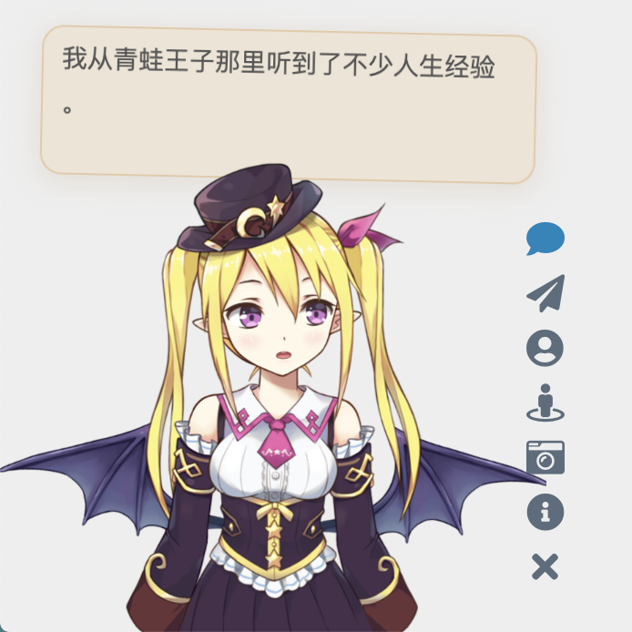

Live2D Widget


特性 Feature
在网页中添加 Live2D 看板娘。兼容 PJAX，支持无刷新加载。
Add Live2D widget to web page. Compatible with PJAX.
警告：本项目使用了大量 ES6 语法，不支持 IE 11 等老旧浏览器。
WARNING: This project does not support legacy browsers such as IE 11.
示例 Demo
在米米的博客的左下角可查看效果。（注：以下人物模型仅供展示之用，本仓库并不包含任何模型。）

你也可以在允许的范围内进行二次开发，这里有一些示例
- demo.html ，展现基础效果
- login.html ，仿 NPM 的登陆界面
依赖 Dependencies
本插件需要 Font Awesome (v4 或 v5) 图标支持，请确保相关样式表已在页面中加载。以 Font Awesome v4 为例，请在 <head> 中加入：
Font Awesome (v4 or v5) is required for this plugin. Take Font Awesome v4 as an example, please add the following in <head>:
1 | <link rel="stylesheet" href="https://cdn.jsdelivr.net/npm/font-awesome/css/font-awesome.min.css"> |
否则图标将无法正常显示。（如果网页中已经加载了任何版本的 Font Awesome，就不要重复加载了）
使用 Usage
将这一行代码加入 <head> 或 <body>，即可展现出效果：
1 | <script src="https://cdn.jsdelivr.net/gh/stevenjoezhang/live2d-widget@latest/autoload.js"></script> |
如果网站启用了 PJAX，由于看板娘不必每页刷新，因此要注意将相关脚本放到 PJAX 刷新区域之外。
换句话说，如果你是小白，或者只需要最基础的功能，就只用把这一行代码，连同前面加载 Font Awesome 的一行代码，一起放到 html 的 <head> 中即可。
对于用各种模版引擎（例如 Nunjucks，Jinja 或者 PHP）生成的页面，也要自行修改，方法类似，只是可能略为麻烦。以 Hexo 为例，需要在主题相关的 ejs 或 njk 模版中正确配置路径，才可以加载。
但是！我们强烈推荐自己进行配置，否则很多功能是不完整的，并且可能产生问题！
如果你有兴趣自己折腾的话，请看下面的详细说明。
Using CDN
要自定义有关内容，可以把这个仓库 Fork 一份，然后进行修改。这时，使用方法对应地变为
1 | <script src="https://cdn.jsdelivr.net/gh/username/live2d-widget@latest/autoload.js"></script> |
将此处的 username 替换为你的 GitHub 用户名。为了使 CDN 的内容正常刷新，需要创建新的 git tag 并推送至 GitHub 仓库中，否则此处的 @latest 仍然指向更新前的文件。此外 CDN 本身存在缓存，因此改动可能需要一定的时间生效。相关文档：
Self-host
你也可以直接把这些文件放到服务器上，而不是通过 CDN 加载。
- 如果你能够通过
ssh访问你的主机，请把整个仓库克隆到服务器上。执行：1
2
3cd /path/to/your/webroot
# Clone this repository
git clone https://github.com/stevenjoezhang/live2d-widget.git - 如果你的主机无法用
ssh连接（例如一般的虚拟主机），请选择Download ZIP，然后通过ftp等方式上传到主机上，再解压到网站的目录下。 - 如果你是通过 Hexo 等工具部署的静态博客，请在博客源文件（即
source）目录下，执行前述的git clone命令。重新部署博客时，相关文件就会自动上传到对应的路径下。为了避免这些文件被 Hexo 插件错误地修改，可能需要设置skip_render。
这样，整个项目就可以通过你的服务器 IP 或者域名从公网访问了。不妨试试能否正常地通过浏览器打开 autoload.js 和 live2d.min.js 等文件，并确认这些文件的内容是完整和正确的。
一切正常的话，接下来修改一些配置就行了。（需要通过服务器上的文本编辑器修改；你也可以先在本地完成这一步骤，再上传到服务器上）
修改 autoload.js 中的常量 live2d_path 为 live2d-widget 这一目录的 URL。比如说，如果你能够通过
1 | https://example.com/path/to/live2d-widget/live2d.min.js |
访问到 live2d.min.js，那么就把 live2d_path 的值修改为
1 | https://example.com/path/to/live2d-widget/ |
路径末尾的 / 一定要加上。具体可以参考 autoload.js 内的注释。
完成后，在你要添加看板娘的界面加入
1 | <script src="https://example.com/path/to/live2d-widget/autoload.js"></script> |
就可以加载了。
后端 API
initWidget 方法接受名为 apiPath 和 cdnPath 的参数，两者设置其中一项即可。其中 apiPath 为后端 API 的 URL，可以自行搭建，并增加模型（需要修改的内容比较多，此处不再赘述）。而 cdnPath 则是通过 jsDelivr 这样的 CDN 服务加载资源，更加稳定。
目录结构 Files
waifu-tips.js包含了按钮和对话框的逻辑；waifu-tips.json中定义了触发条件（selector，CSS 选择器）和触发时显示的文字（text）；waifu.css是看板娘的样式表。
源文件是对 Hexo 的 NexT 主题有效的，为了适用于你自己的网页，可能需要自行修改，或增加新内容。
警告：作者不对包括但不限于 waifu-tips.js 和 waifu-tips.json 文件中的内容负责，请自行确保它们是合适的。
如果有任何疑问，欢迎提 Issue。如果有任何修改建议，欢迎提 Pull Request。
鸣谢 Thanks

感谢 BrowserStack 容许我们在真实的浏览器中测试此项目。
Thanks to BrowserStack for providing the infrastructure that allows us to test in real browsers!

感谢 jsDelivr 提供的 CDN 服务。
Thanks jsDelivr for providing public CDN service.
代码自这篇博文魔改而来：
https://www.fghrsh.net/post/123.html
点击看板娘的纸飞机按钮时，会出现一个彩蛋，这来自于 WebsiteAsteroids。
更多 More
更多内容可以参考：
https://imjad.cn/archives/lab/add-dynamic-poster-girl-with-live2d-to-your-blog-02
https://github.com/xiazeyu/live2d-widget.js
https://github.com/summerscar/live2dDemo
关于后端 API 模型：
https://github.com/fghrsh/live2d_api
https://github.com/xiazeyu/live2d-widget-models
https://github.com/xiaoski/live2d_models_collection
除此之外，还有桌面版本：
https://github.com/amorist/platelet
https://github.com/akiroz/Live2D-Widget
https://github.com/zenghongtu/PPet
https://github.com/LikeNeko/L2dPetForMac
以及 Wallpaper Engine：
https://github.com/guansss/nep-live2d
许可证 License
Released under the GNU General Public License v3
http://www.gnu.org/licenses/gpl-3.0.html
本仓库并不包含任何模型，用作展示的所有 Live2D 模型、图片、动作数据等版权均属于其原作者，仅供研究学习，不得用于商业用途。
Live2D 官方网站：
https://www.live2d.com/en/
https://live2d.github.io
Live2D Cubism Core は Live2D Proprietary Software License で提供しています。
https://www.live2d.com/eula/live2d-proprietary-software-license-agreement_en.html
Live2D Cubism Components は Live2D Open Software License で提供しています。
http://www.live2d.com/eula/live2d-open-software-license-agreement_en.html
The terms and conditions do prohibit modification, but obfuscating in
live2d.min.jswould not be considered illegal modification.
https://community.live2d.com/discussion/140/webgl-developer-licence-and-javascript-question
更新 Update
2018年10月31日，由 fghrsh 提供的原 API 停用，请更新至新地址。参考文章：
https://www.fghrsh.net/post/170.html
2020年1月1日起，本项目不再依赖于 jQuery。